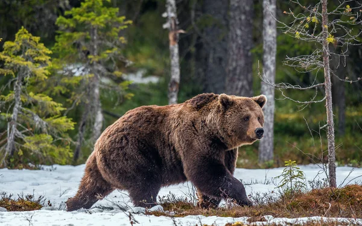
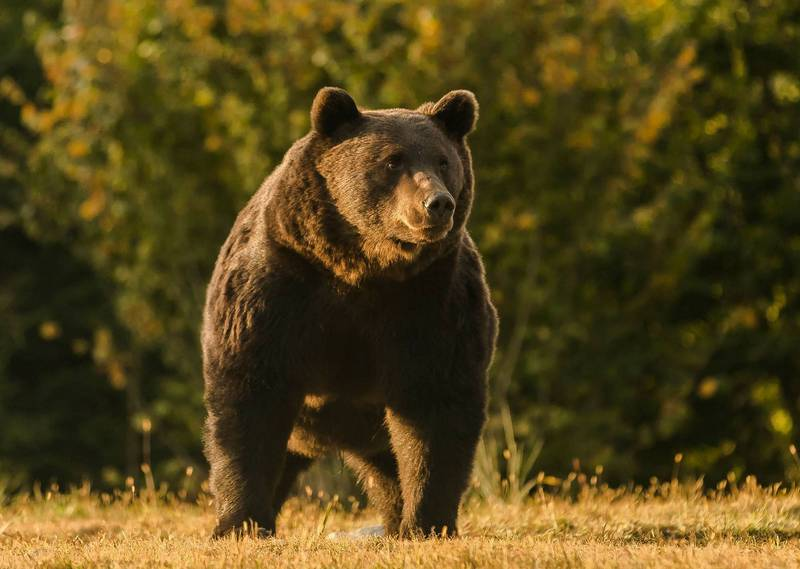
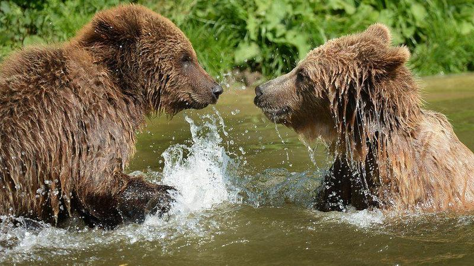

棕熊 Brown Bear

棕熊

棕熊

棕熊
Previous
Next
性格：
棕熊通常表現出溫和的態度，並傾向於避免與
人類接觸。牠們更喜歡獨自行動，並且通常在
遇到威脅或感到不安時會選擇避開。棕熊具有
強烈的領土意識，它們會標記和保護自己的領
地。牠們通常會展示攻擊性行為，以保護自己
。母熊會照顧幼熊，教導它們尋找食物和生存
技能，並對任何對幼熊的威脅表現出極度的戒
備。
食物：
棕熊是雜食性動物，其飲食包括植物、果實、
堅果、根莖、草、昆蟲、小型哺乳動物和魚類
。它們的飲食習性可以根據季節和地理位置而
有所變化。
外觀特徵：
棕熊是相對較大型的熊種，身體呈現圓胖而壯
碩的外觀。牠們的毛色可以從淺褐色到深褐色
變化，但也有極少數個體呈現白色或灰色的稀
有變種。棕熊具有強壯的肩膀和前肢，且通常
具有強大的爪子，用於挖掘、攀爬和捕食。
分佈：
棕熊廣泛分佈於北半球，主要在北美洲和歐亞
大陸的一些地區出現。北美洲棕熊的分佈範圍
包括阿拉斯加、加拿大、美國洛磯山脈和亞利
桑那州等地。在歐亞大陸，棕熊主要分佈在俄
羅斯、北歐、西伯利亞和西伯利亞以東地區。
生活型態：
棕熊通常是獨居的動物，但在一些情況下也會
形成小型社會群體，例如母熊和幼熊之間的關
係。它們是慢速移動者，擁有相對較大的領域
範圍，並且可以在不同的季節進行遷徙。
壽命：
棕熊的壽命因地區、環境和個體而有所不同。
一般而言，野生棕熊的壽命範圍在20至30年之
間，但在適應良好的情況下，壽命可能超過30
年。